20180330_联合分布-边缘概率-条件分布-独立随机变量
原文链接： http://www.cnblogs.com/vamei/p/3224111.html
我之前一直专注于单一的随机变量及其概率分布。我们自然的会想将以前的结论推广到多个随机变量。联合分布(joint distribution)描述了多个随机变量的概率分布，是对单一随机变量的自然拓展。联合分布的多个随机变量都定义在同一个样本空间中。
对于联合分布来说，最核心的依然是概率测度这一概念。
离散随机变量的联合分布
我们先从离散的情况出发，了解多个随机变量并存的含义。
之前说，一个随机变量是从样本空间到实数的映射。然而，所谓的映射是人为创造的。从一个样本空间，可以同时产生多个映射。比如，我们的实验是连续三次投硬币，样本空间为
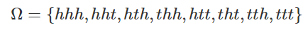
h为正面，t为反面。在同一样本空间上，我们可以定义多个随机变量，比如:
X: 投掷为正面的总数，可以取值0，1，2，3Y: 最后一次出现负面的总数，可以取值0，1Z: 将正面记为10，负面记为5，第一次与第三次取值的差，可以有5, -5, 0
这三个随机变量可以看作一个有三个分量的矢量。所以定义在同一样本空间的多随机变量，是一个从样本空间到矢量的映射。
(从这个角度上说，单一随机变量是一个从样本空间到一个有一个分量的矢量的映射)
如果样本空间Ω中每个结果出现的概率相等。而样本空间中共有8个结果，那么个每个结果的出现的概率都是1/8。据此，我们可以计算联合概率，比如
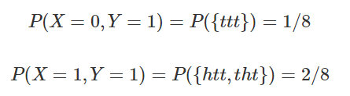
对于X=x,Y=y，我们寻找样本空间中满足这两个取值的所有元素。这些元素构成一个样本空间的子集，该子集的概率就是P(X=x,Y=y)的联合概率。p(x,y)=P(X=x,Y=y)称为联合概率密度函数(joint PMF, joint probability mass function)。联合概率可以看做两个事件同时发生时的概率，事件A为X=x，事件B为Y=y，即P(A∩B)。
找到所有可能取值组合的概率，就找到了这两个随机变量的联合分布:
| XX | YY | P(X,Y)P(X,Y) | 对应子集 |
|---|---|---|---|
| 0 | 0 | 0 | ΦΦ |
| 1 | 0 | 1/8 | tth |
| 2 | 0 | 2/8 | thh, hth |
| 3 | 0 | 1/8 | hhh |
| 0 | 1 | 1/8 | ttt |
| 1 | 1 | 2/8 | htt, tht |
| 2 | 1 | 1/8 | hht |
| 3 | 1 | 0 | ΦΦ |
联合分布
联合分布描述了所有可能的取值情况。因此，联合概率密度函数的累积和为1。
连续随机变量的联合分布
我们知道，单个连续随机变量的概率是变量在某个区间(某段线的“长度”)取值的概率。做类似的推广，多个连续随机变量的概率，是这多个随机变量在多维区间的概率。比如两个随机变量，我们需要表达一个二维区间的概率，比如P(a≤X≤b,c≤Y≤d))。这个二维区间可以有一个类似于一个小补丁的“面积”。二维区间对应的概率是一个体积。

面积对应的体积
在单变量情况下，概率是一个“面积”，是由区间的“长度”和密度函数(一条曲线)围成的。这里的“体积”是二维区间的“面积”和密度函数(一个曲面)围成的。我们可以使用联合概率密度函数(joint PDF, joint probability density function)来表达多随机变量的分布。对于双变量的联合分布来说，它等于无穷小块的概率，除以无穷小块的面积。
用微积分的语言来说，就是
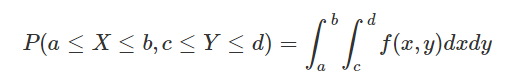
f(x,y)就是描述X和Y的联合分布的联合概率密度函数。
联合概率密度函数描述了所有可能取值的情况，因此有
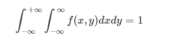
实例
下面是两个连续随机变量的联合PDF:
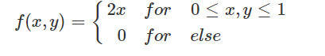
通过积分，计算X在0到0.5，而Y在0到1的概率:
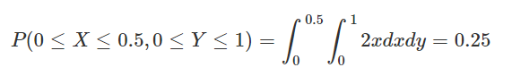
我们之前也说到，单个随机变量的概率对应线段到概率密度曲线之间的面积。而两个随机变量的概率对应小块到概率密度面之间的体积。
我们可以绘制f(x,y)的分布图形，即一个二维的平面。图中的颜色标记了f(x, y)值的大小。如下:
 可以看到，f(x, y)随X增大而增大，在X值确定时，f(x, y)不随Y变化。
可以看到，f(x, y)随X增大而增大，在X值确定时，f(x, y)不随Y变化。
# By Vamei
from mpl_toolkits.mplot3d import Axes3D
from matplotlib import cm
from matplotlib.ticker import LinearLocator, FormatStrFormatter
import matplotlib.pyplot as plt
import numpy as np
fig = plt.figure()
ax = fig.gca(projection='3d')
X = np.arange(0, 1, 0.05)
Y = np.arange(0, 1, 0.05)
X, Y = np.meshgrid(X, Y)
Z = 2*X
surf = ax.plot_surface(X, Y, Z, rstride=1, cstride=1, cmap=cm.coolwarm,
linewidth=0, antialiased=False)
ax.set_zlim(0.0, 2.5)
ax.zaxis.set_major_locator(LinearLocator(10))
ax.zaxis.set_major_formatter(FormatStrFormatter('%.02f'))
ax.set_xlabel("X")
ax.set_ylabel("Y")
ax.set_zlabel("f(x,y)")
fig.colorbar(surf, shrink=0.5, aspect=5)
plt.show()
边缘概率
联合分布包含了多个随机变量的分布信息。我们当然可以从联合分布中，提取出任意一个单一随机变量的分布，也就是所谓的边缘分布(marginal distribution)。
对于离散随机变量，可以获得边缘概率质量函数(marginal pmf):
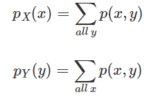
在求X的单一边缘分布时， 我们累加了相同x值、不同y值时的多个联合概率，从而获得该x值的的总体概率，即边缘概率。
连续随机变量X的边缘密度函数(marginal pdf, marginal probability density function)可以定义为
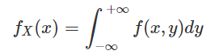
fX(x)是联合密度函数对Y的积分。通过积分，我们将不同Y取值时的联合概率加在一起，就获得纯粹的单一X的分布状况。
类似的，Y的边缘密度函数为
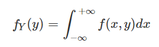
取离散随机分布的例子，即掷三次硬币
| 0 | 1 | 2 | 3 | p(y) | |
|---|---|---|---|---|---|
| 0 | 0 | 1/8 | 2/8 | 1/8 | 1/2 |
| 1 | 1/8 | 2/8 | 1/8 | 0 | 1/2 |
| p(x) | 1/8 | 3/8 | 3/8 | 1/8 |
边缘概率是对各行和列的累加。最后一列p(y)是Y的分布，Y有1/2的概率取0，1/2的概率取1。最后一行p(x)是X的分布。
取连续随机分布的例子，即下面的连续分布:
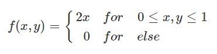
可以得到:
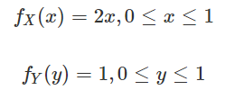
条件分布
我们之前基于事件介绍了条件概率，即如果事件B发生，那么事件A发生的概率。相同的概念可以引申到随机变量。随机变量取某个值，这可以看做一个事件。我们想知道，随机变量Y取值y，另一个随机变量X为x的概率。
与事件的条件概率类似，假设pY(y)≠0，在Y=y的条件下，随机变量X取值为x的概率定义为:
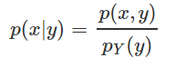
即X=x,Y=y同时发生的概率，除以Y取值为y的的概率。
以掷三次硬币为例。条件为Y值取值0，即最后一次投掷为正面时。此时，X取值为2有两种可能，即前两次为ht和th。由于前两次投掷有四种组合，所以概率为0.5。
我们可以通过条件概率的公式计算并验证:
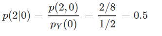
如果说概率是分一个总和为1的大饼，如果大饼分八块，每块就是1/8。假设半个饼上撒胡椒，另半个饼上撒辣椒。那么在胡椒饼(相当于我们的条件)上选取一块的概率，就是1/4。此时，也就是用原来的概率除以胡椒饼所占的比重。
对于连续随机变量，假设fY(y)≠0，给定Y=y，随机变量X的条件分布为:
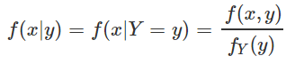
独立随机变量
正如事件之间可以相互独立一样，随机变量之间也可以相互独立。当X独立于Y时，我们可以相像，Y的取值，将不影响X的概率。也就是说
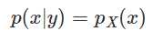
这意味着，当且仅当
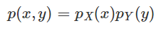
时，X和Y相互独立。
可以验证，连续投掷三次硬币的例子中，X和Y并不独立，比如
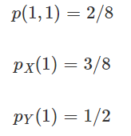
因此，
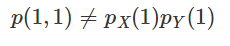
X和Y并不独立。
对于连续随机变量来说，当且仅当
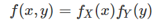
时，X和Y相互独立。
对于分布
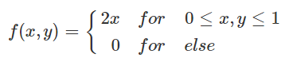
使用之前获得的边际分布，可以验证
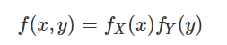
因此，对于该分布来说，X和Y相互独立。
总结
通过联合分布，我们将单随机变量的分布拓展到多随机变量的分布。同样的，在单随机变量中引入的条件概率，也可以使用到多随机变量。我们还探讨了随机变量的独立性。
欢迎继续阅读“数据科学”系列文章